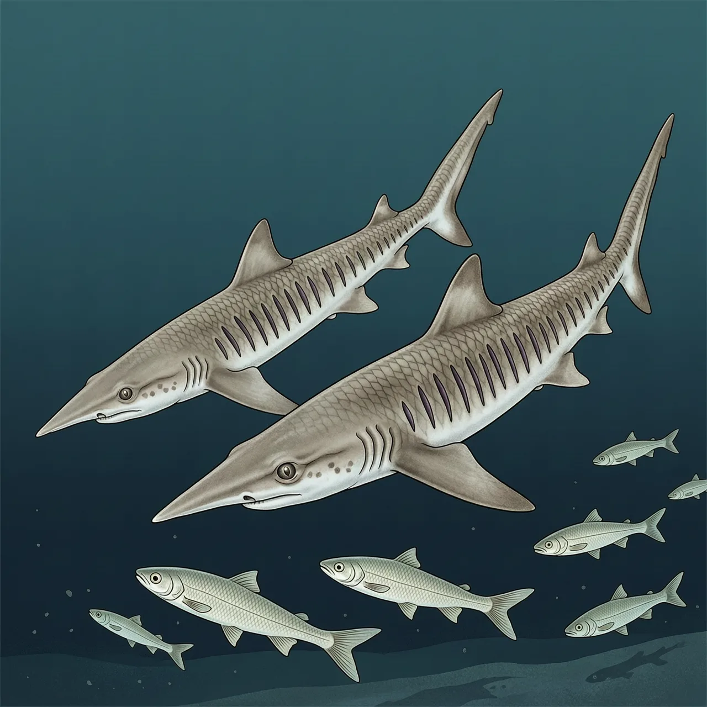
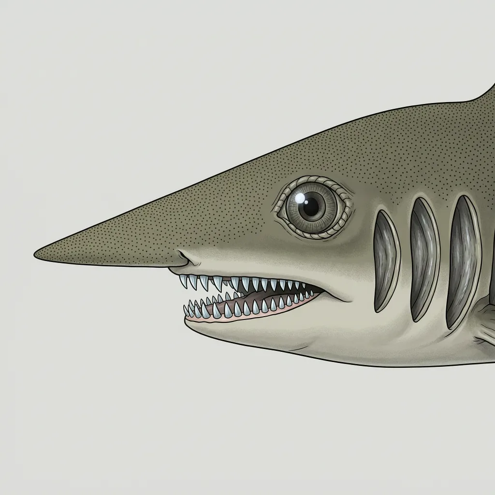

尖吻七鳃鲨是六鳃鲨科七鳃鲨属的唯一现存物种，头上有七道鳃裂，而多数鲨类只有五道。它生活在27至1000米深的海域，体长最长137厘米，主要吃硬骨鱼、魟鱼和鱿鱼，还会成群合作围猎比自己大的猎物。IUCN列为近危，但种群数量不明。
水深27到1,000米，阳光已经微弱，尖吻七鳃鲨主要在这样的海里活动，偶尔也靠近水面。它的分布广而记录零散：从美国东岸到巴西、阿根廷的大西洋沿岸，墨西哥湾与古巴，安哥拉以北直到摩洛哥，地中海大部，还有中国海南近海、日本九州以南、爪哇以东和澳洲南部。多数人是深水拖网把它捎上来，才见到一次，它的种群数量没有人知道。
137厘米是尖吻七鳃鲨的极限体型，雌性一般长90厘米，雄性85厘米，这样的身板单打独斗威胁不了大猎物。但它是少数会团队合作的鲨鱼之一，个体合力去猎补体型比自己大的猎物。它头部很尖，只有一片背鳍，下颚有一排梳子一样的牙齿，尾巴很长，约占整体长度的三分之一。它餐桌上是硬骨鱼、魟鱼、细小的鲨鱼、鱿鱼和甲壳类。
尖吻七鳃鲨最不寻常的地方藏在名字里：它头侧一字排开七道鳃裂，而今天常见的鲨类只有五道。多出来的这对裂口是鲨类谱系古老特征的残留，它也是七鳃鲨属唯一的现存物种，等于一支血统只剩它一根独苗。IUCN把它列为近危。它不伤害人类，被渔网捞起的那些，肝拿去炼鱼肝油，骨头进了汤锅。
